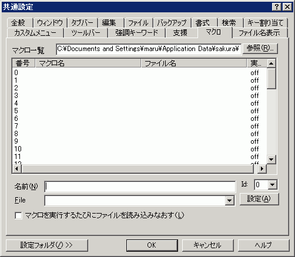

共通設定 『マクロ』プロパティ
『全般』
『ウィンドウ』
『タブバー』
『編集』
『ファイル』
『バックアップ』
『書式』
『検索』
『キー割り当て』
『カスタムメニュー』
『ツールバー』
『強調キーワード』
『支援』
『マクロ』
『ファイル名表示』

ここで登録されたファイルは、
登録済みマクロ
メニューの下に一覧表示されます。
マクロフォルダ
マクロリストのファイル名が相対パスの場合の元になるフォルダを指定します。
フォルダ名が相対パスの場合も、フォルダ名は、エディタからの相対パスとして認識します。ただし、「..」は使えません。
たとえば、「Macro\」と指定し、エディタが「C:\Program files\sakura」フォルダにある場合は、「C:\Program files\sakura\Macro\」を指すことになります。
キーマクロの記録
は、このフォルダに「RecKey.mac」と言うファイル名で保存されます。
[参照]
ボタン
マクロが格納されているフォルダを指定します。
マクロ一覧
リスト
マクロの一覧を表示します。
５０個まで登録できます。
マクロを選択すると以下の
名前
ID
ファイル名
マクロを実行するたびにファイルを読み込みなおす
を表示します。
名前
マクロの名前を指定します。
ID
マクロを登録する位置を指定します。
File
マクロのファイル名を指定します。
□
マクロを実行するたびにファイルを読み込みなおす
マクロ実行時に対応するマクロファイルを読み込みなおしてからマクロを実行します。
[設定]
ボタン
マクロファイルをIDで示す位置に登録します。
・ファイル名が未入力の場合 --> 未登録として扱われる
・名前が未入力の場合 --> ファイル名がマクロ名とみなされる
登録を解除するには、名前及びファイル名を空欄にして[設定]ボタンを押します。
[設定フォルダ]
設定フォルダ
ボタンは、
ユーザー別設定
を行っている場合のみ表示されます。
ヒント
名前、ファイルなどを変更しても、
[設定]
ボタンを押さないとリストには登録されません。
注意
ツールバーに登録できるのは２０番目までです。
 ヒント
ヒント 注意
注意